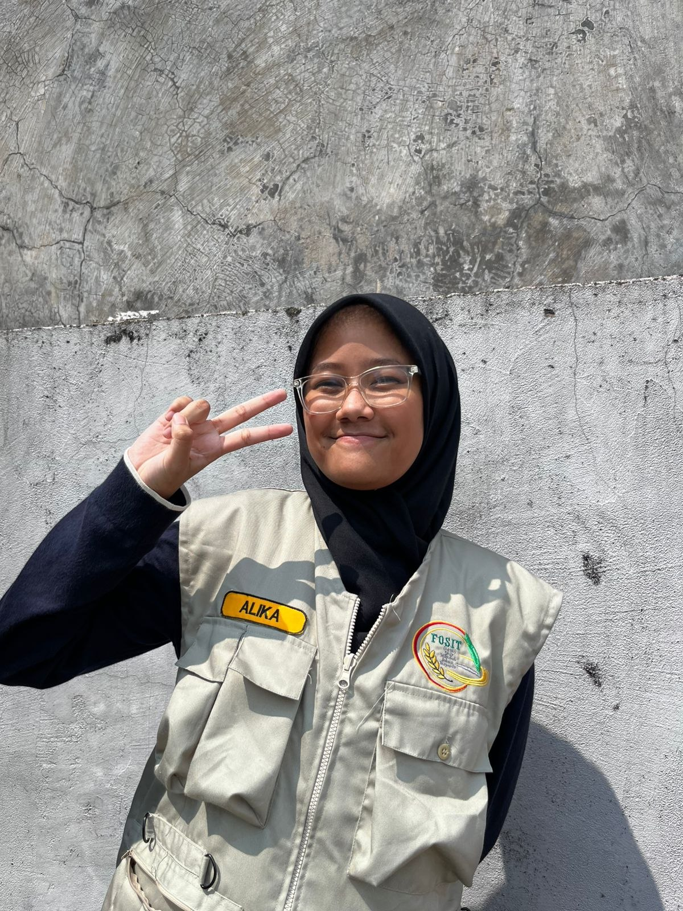

Karya Nyata dari Proses Belajar

Kenalkan, nama saya Alika Kalisa akrab dipanggil Alika. Saya bersekolah di SMPIT Al-Haraki dan duduk di kelas 9 Al-A'raf.
Saya lahir di sebuah kota kecil nan padat di sisi selatan Jakarta. Di kota muda inilah saya bertumbuh, berkembang, mengenal, berteman, dan belajar dengan orang-orang baru yang juga meniti jalur hidupnya di kota bernama Depok ini sejak 15 tahun yang lalu, tepatnya pada 24 Agustus 2011. Di dalam daerah kecil yang dulunya sebuah perkebunan milik pejabat VOC inilah hidup orang-orang yang saya cintai, mereka adalah keluarga saya. Saya adalah anak ke-4 dari 4 bersaudara dalam keluarga yang terdiri dari 6 orang, kelima orang inilah yang mengajarkan saya untuk pertama kalinya dalam hidupku cara untuk bersosialisasi dengan manusia. Seperti anggota keluarga yang lainnya, saya memiliki makanan yang sangat saya sukai, yaitu mie ayam yang ditemani dengan secangkir es teh tawar pada pagi atau siang hari. Itu adalah sebagian dari kebahagiaan yang saya rasakan dalam kecil dan sibuknya hiruk-pikuk kota ini, masih banyak lagi tetapi saya rasa itu semua sudah cukup untuk seseorang mengenalku.
Saya memiliki minat dan hobi dalam membaca, menulis cerita, merajut, serta memotret atau biasa dikenal fotografi. Bagi saya semua hobi yang saya miliki memberikan kebahagiaan tetapi dalam fotografi saya merasa itu bukanlah hanya sekedar menekan tombol dan menghasilkan foto yang cantik, dalam fotografi saya merasa saya dapat menyalurkan perasaan saya melalui hasilnya, menggambar dan menangkap emosi sang subjek yang ingin saya sampaikan pada siapapun pengagum karya saya.
Saya bercita-cita untuk menjadi dokter spesialis anak. Harapannya dengan cita-cita itu saya dapat membantu mereka yang membutuhkan, terutama anak-anak yang memiliki badan yang lebih lemah dibandingkan orang dewasa. Meski begitu, untuk sekarang saya berharap dan befokus untuk dapat diterima di SMAN 1 Bogor untuk jenjang pendidikan berikutnya.
Selama saya duduk di bangku kelas 9 ini, saya belajar banyak hal. Saya belajar tentang menghargai waktu yang ada, tentang pertemanan yang dijalin, tentang kerja keras yang diusahakan, dan bahkan tentang rasa percaya yang dibangun. Kelas 9 ini tidak bisa dibilang bagian yang mudah dalam masa putih biru yang saya jalani, tetapi di dalamnya terdapat terlalu banyak kenangan manis pahit yang tidak bisa saya lupakan. Kelas 9 ini akan menjadi akhir dan penutup dalam perjalanan panjang yang saya lalui selama 3 tahun, tidak selalu berjalan mulus ataupun lancar, tetapi ini semua sudah lebih dari kata sempurna. Andai saya bisa, saya ingin mengucapkan terimakasih yang sebesar-besarnya secara langsung pada setiap teman, guru, serta siapapun yang mewarnai hidup saya dalam jangka waktu 3 tahun terakhir, doa yang terbaik untuk kalian semua. Untuk kita yang masih melanjutkan perjuangan dalam meraih suksesnya masing-masing, semangat untuk jangan pantang menyerah! Untuk Bapak Ibu guru, seribu terimakasih untuk ilmu dan pembelajaran hidup yang saya dapatkan, berjuta maaf jika ada tindakan maupun perkataan saya yang tidak berkenan di hati Bapak Ibu. Untuk hari-hari penuh tawa dan senyum itu, kudoakan selalu.